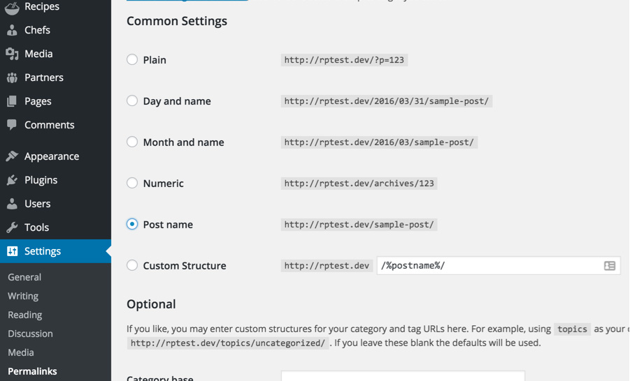

Create Home & News Pages
In case of Demo Contents Import the home page and news page are already created and you do not need to follow this section.
Create Home Page
To create Home page you need to create a new page, Go to Pages > Add New. You can give this page a title "Home" yet you do not need to include any contents for now. Select the “Home” template from the Page Attributes section, as displayed in the screenshot given below and click “Publish”.
Create News Page
To create News page you need to create a new page, Go to Pages > Add New. You can give this page a title "News" yet you do not need to include any contents. Select the “Default Template” template from the Page Attributes section and click “Publish”.
Configure Reading Settings
Now you need to configure reading settings, Go to WordPress Dashboard > Settings > Reading and choose the front page displays as static page. Then select Home as Front Page and News as Posts Page. As, displayed in the screenshot given below.
Configure Pretty Permalinks
To configure pretty permalinks, Go to WordPress Dashboard > Settings > Permalinks and change it as displayed in the screenshot given below.

Configure Primary Menu
Navigate to Appearance > Menus and create a new menu with any name you like. Assign the newly created menu to related theme location. For example you can use "Main Menu" from Menu Settings section below menu. After that save the menu. As pointed in the screenshot given below.